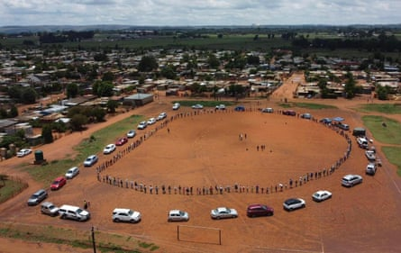
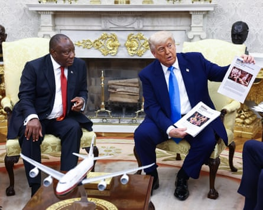

F or some white Afrikaner South Africans, Donald Trump’s offer of refugee status in the US has been seen as a godsend . For others, it has provoked anger and frustration that they are being falsely portrayed as victims of a “white genocide”, 31 years after their community’s own oppressive minority rule ended.
In February, Trump signed an executive order claiming Afrikaners, who make up about 4% of South Africa’s population, or about 2.5 million people, were victims of “unjust racial discrimination”. The order cut aid to the country and established a refugee programme for white South Africans. The first group arrived in May .

White South Africans demonstrate in support of Donald Trump in front of the US embassy in Pretoria on 15 February.Photograph: Jérôme Delay/AP
Afrikaners, descendants of Dutch colonisers and French Huguenot refugees who came to South Africa in the late 17th century, implemented apartheid from 1948. The regime violently repressed the black majority, while keeping white people safe and wealthy.
South Africa remains deeply unequal. White South Africans typically have 20 times the wealth of Black people, according to an article in the Review of Political Economy.
The spectacle of white people being flown to the US while Trump blocked refugees from war zones bemused and angered South Africans of all races. For some liberal Afrikaners, it felt personal.
“In terms of being singled out, for progressives it’s extremely painful,” said Lindie Koorts, a history lecturer at the University of Pretoria.
Koorts mentioned the phrase “ ons is nie almal so nie ” (“we are not all like that”). She said the phrase is used by progressives to reach out across South Africa’s divides without disavowing their Afrikaner or South African identities – despite it having become a cliche that conservative Afrikaners use to mock them.
A celebration in 2023 by Betereinders, an Afrikaner group campaigning for better race relations in South Africa.
The rightwing Solidarity Movement , which includes a trade union and the campaigning group AfriForum, has lobbied Trump since his first presidential term for support in helping Afrikaners stay in South Africa, to preserve what Solidarity Movement says is a culture under threat. The group argues, for instance, that a recently implemented education law will limit Afrikaans schooling , something the ruling African National Congress disputes.
There is not comprehensive polling data on Afrikaners’ political views. However, the Freedom Front Plus party, which is seen as representing conservative Afrikaners, received about 456,000 votes in the 2024 national elections .
Emile Myburgh, a lawyer who grew up during apartheid believing that Afrikaners were God’s chosen people, said: “I remember when I was a child often hearing Afrikaners say that: ‘The one who rules the tip of Africa rules the world.’ So we’d feel very special.”

Emile Myburgh, a lawyer, disputes the claim that his Afrikaans culture is under threat.
As an atheist, Myburgh, 52, said he now felt excluded from the deeply religious community he grew up in. However, he disputed the claim that his culture was under threat, noting that he regularly attended Afrikaans book launches. “In the circles that I move in, we do celebrate Afrikaans culture,” he said.
Zahria van Niekerk, a 22-year-old fashion student, who was raised bilingually to help her get into university, disagreed that the Afrikaans language, of whom the majority of speakers are now non-white, was threatened. “My whole family speaks Afrikaans … As long as I can speak it with my family, I’m not really concerned.”
In May, Trump ambushed South Africa’s president , Cyril Ramaphosa, in the Oval Office with claims that white farmers were being murdered for their race. However, Emil van Maltitz, an economics graduate and farmer’s son, disagreed.
The 21-year-old, who speaks Sesotho, Afrikaans and English, said: “Most farmers are white Afrikaners, so it can easily be interpreted as racial targeting. I just think, personally, people are very vulnerable in those areas and they don’t have a lot of help from the police.”
In the last quarter of 2024, South African police recorded 12 murders on farms, including Black-owned smallholder plots, out of almost 7,000 murders across the country.
Van Maltitz recalled young black farmers coming to his father to seek agricultural advice, saying it showed the value of South Africans working together. “I love diversity, I love being around different people,” he said.
Schalk van Heerden is a minister in the Dutch Reformed Church, the largest Afrikaans church. He joked that he was a “missionary” within the DRC, which supported the apartheid regime.
Donald Trump ambushes South Africa’s president, Cyril Ramaphosa, in the White House on 21 May with claims that white farmers were being murdered because of their racePhotograph: Jim Lo Scalzo/UPI/Shutterstock
Van Heerden co-founded Betereinders in 2017 to bring about 50 to 100 Afrikaners to monthly brais (barbecues) with up to 200 black people in townships, where most black South Africans still live. Betereinders means “better-enders” and is a pun on “bittereinders” (‘bitter-enders”), Afrikaners who refused to surrender to the British when their side lost the Boer war.
When Trump introduced the refugee scheme for Afrikaners, Beterenders put up 10 billboards around Johannesburg and Pretoria saying, “Not USA. You, SA.”
Van Heerden said: “We want to be proud about who we are … [But] we are not the big victims in this story. We are privileged, we are very grateful and we are thankful for everything we have.”